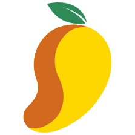

Mango Beta · Windows & MacDein Assistent für die Facharbeit. Er arbeitet direkt in deinem Lerntagebuch und deiner Facharbeit.
Setup herunterladen und starten. Bei der Windows-Warnung: Weitere Informationen → Trotzdem ausführen.
Die .dmg öffnen und Mango in den Ordner „Programme“ ziehen. Beim ersten Start: Rechtsklick auf Mango → Öffnen. Falls das nicht reicht: Systemeinstellungen → Datenschutz & Sicherheit → Trotzdem öffnen.
Installiere einmal Claude Code oder Antigravity und melde dich an. Oder nimm einen DeepSeek-Schlüssel: einfügen, fertig. Mango zeigt dir alles dafür.
Auf dem Mac arbeitet Mango mit der DeepSeek-API. Erstelle auf platform.deepseek.com einen Schlüssel, füge ihn in Mango ein, fertig. Er bleibt verschlüsselt auf deinem Mac.
Name, Thema und Abgabedatum eintragen. Schon angefangen? Ziehe deine Dateien einfach ins Fenster.
Sag der KI, was du gemacht hast. Sie trägt es ins Lerntagebuch ein, in kurzen, einfachen Sätzen.
Die Arbeit bleibt deine. KI-Nutzung musst du nach den Regeln deiner Schule kennzeichnen. Mango exportiert dafür die Gesprächsverläufe für den Anhang.
Mango ist ein privates Projekt und gehört nicht zur Schule. Die Beta ist nicht signiert, deshalb zeigen Windows und macOS eine Warnung. Die Mac-Version ist neu und noch nicht auf vielen Geräten getestet. DeepSeek wird nach Verbrauch abgerechnet, das zahlst du selbst.